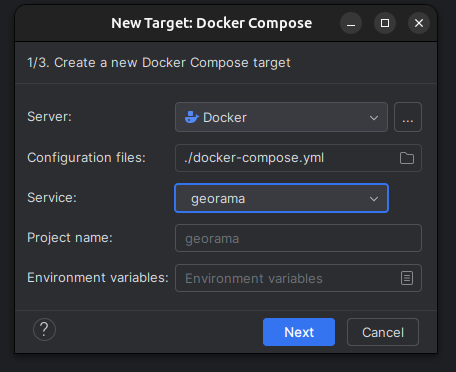
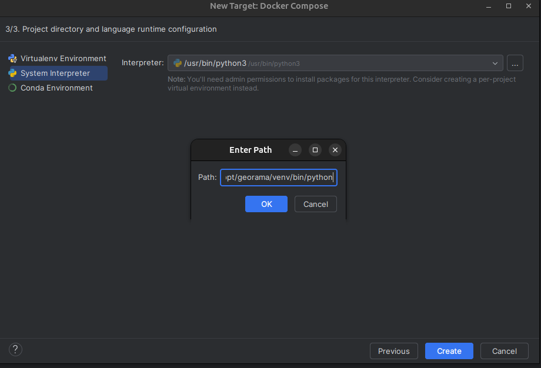
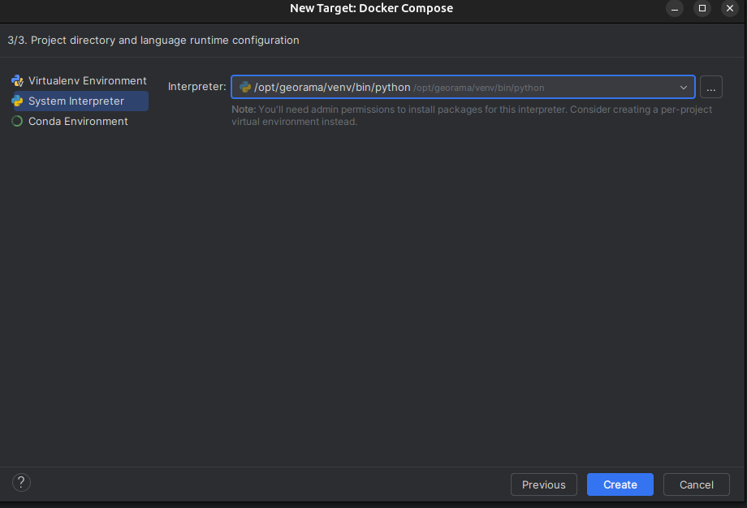
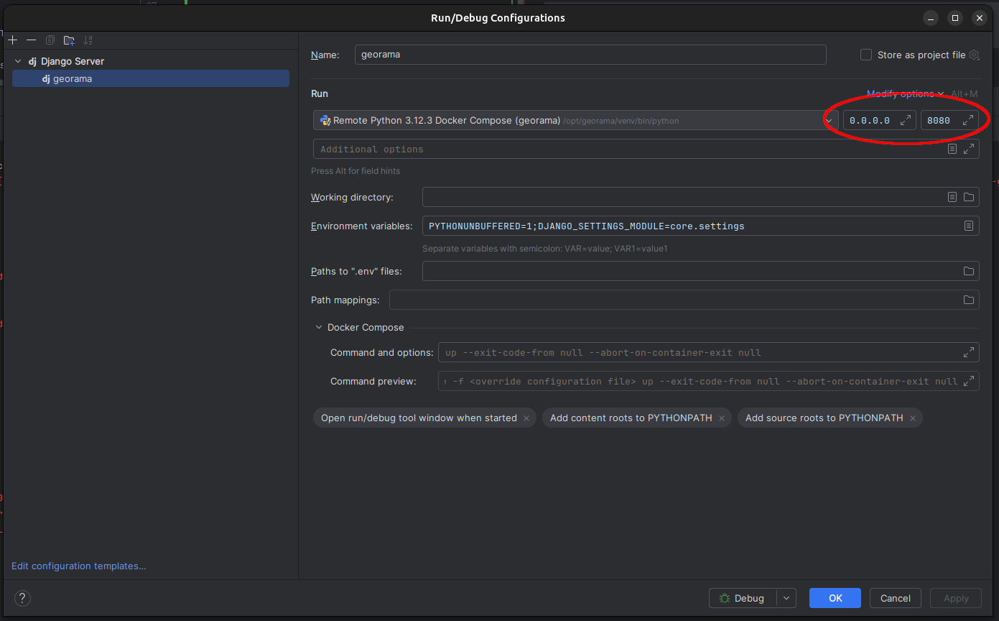
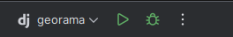
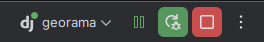

🛠️ Development Guide¶
This page outlines how to develop and run Georama either inside a Docker container or directly on your local machine.
Setup the environment variables¶
Please read the following instructions: setup_env.md
🐳 Development in a Container¶
Follow the Quickstart in README.md. Check if everything is running.
🔄 Live Code Reloading¶
The Docker setup mounts the local project code into the container (specifically the georama service). This enables hot reloading, meaning code changes are picked up without restarting the container.
🧠 IDE Integration (Container Interpreter)¶
If you use an IDE (e.g. PyCharm), you can point it to the Python interpreter inside the container: /opt/georama/venv This gives you full code intelligence and completion based on the container’s environment.
💻 Development on the Host (Local Machine)¶
Info
Local development requires Python 3.10 or lower due to package compatibility.
📦 Dependencies¶
Make sure these are available on your system:
- GDAL (incl headers have to be available)
make- general
pipandvirtualenvhas to be available
✅ Install on Ubuntu:¶
sudo apt-get update && sudo apt-get install gdal make
🧪 Set Up Virtual Environment¶
To prepare a local virtual environment (in the folder .venv) run the following command:
make install-dev
In case you are using an IDE you can point it to that venv to have code completion and code inspection.
✅ Running the test¶
To run the tests locally execute the following command:
make tests
🌍 Running the test server¶
Georama needs a postgres database to store its stuff in. Unless you have a running database already somewhere you can easily start one via docker.
- Spin up a database (for georama admin configuration):
docker run --rm -d --name georama -e POSTGRES_PASSWORD=test -p 54321:5432 postgis/postgis:latest
The maps (qgis-server-light) part of georama needs a redis instance to put jobs in.
-
Start a redis instance (for qsl integration):
docker run --rm -d -p 1234:6379 --name georama-redis redis -
Launch the Auto-Reloading Dev Server: You can spin up a self reloading DEV server which detects code changes automatically with:
make serve-dev
- Initialize the Database: Once the server is running, open another terminal to create the database structure for Georama.
make migrate
- Create a Superuser: Create a superuser which can be used to log into Georama:
make create-superuser
- Create example content:: Create example content (like demo users):
make create-example-content
🔃🛠️ Update QGIS Server light lib¶
qgis-server-light interface is part of georama.
It is currently installed directly from github. You may want to use an updated version in your setup while coding.
To force reinstall GitHub dep qgis_server_light docker compose:
docker compose exec georama bash -c '/opt/georama/venv/bin/pip install --force-reinstall --no-deps "git+ssh://git@github.com/opengisch/qgis-server-light.git@master#qgis_server_light"'
To force reinstall GitHub dep qgis_server_light locally:
.venv/bin/pip install --force-reinstall --no-deps "git+ssh://git@github.com/opengisch/qgis-server-light.git@master#qgis_server_light"
🧑💻 Using PyCharm with Docker Interpreter¶
🐳 Adjust the Dockerfile¶
Add comment marks to the line 48+49+50 in the Dockerfile as shown below:
#ENTRYPOINT ["/tini", "--", "make"]
#
#CMD ["serve-dev"]
Now run:
docker compose build
docker compose up -d
⚙️ Configure the Python Interpreter in PyCharm¶

Specify the interpreter path as: /opt/georama/venv/bin/python


🐞 Configure Run/Debug¶
Adjust the IP in the run/debug configuration to 0.0.0.0 and the port to 4242

▶️ Start Debugging¶
Finally you can now connect to the pycharm debugger


✅ Next Steps¶
See the Workflow